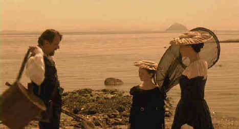

Columbia/1998/105m/ANA 1.85, PS 1.33
 |
Reminescent of the Impressionists©Columbia |
Rosina/Mary takes on
her duties with the energy of purpose, quickly preventing the tutor-student relationship
from oppressing her. At night, in the privacy of her room, she practices a hybrid Judaism.
During the day, between guiding her charge Clementina through books, communing with nature
leads to a fateful exchange with the master of the house on the beach. When young Henry
Cavendish arrives home after being expelled from Oxford even greater complications arise.
The key to The Governess is mood. The bucolic ambiance
created with the camera’s outdoor compositions is reminiscent of Impressionist
paintings. The passion aroused in the Charles’ photography laboratory develops much
like the images on the photosensitive paper, beginning with a faded idea and burning
through the soul to reality. The intellectual atmosphere and her desire for knowledge
stimulate Rosina’s hungers. Mary’s intelligence and youth arouse Charles who is
frustrated by the limited intelligence of his spouse. Thrown together in Charles’
laboratory, they have a chemical reaction that takes them into an out of control affair.
Debut director/writer Sandra Goldbacher imbues The Governess
with a passion equal to that of her main characters. While the tone may falter slightly
and strain in the flashbacks of Rosina’s childhood, Goldbacher succeeds in making The
Governess a memorable initial film. Eloquently photographed by Ashley Rowe, The
Governess is shot with an overlay of strong brown hues that relate beautifully to the
photographic elements of the film. Minnie Driver and Tom Wilkinson play the lovers ignited
by the spark of knowledge with great intensity. Still, there are melodramatic elements
that creep in to the smoldering exchanges.
Faithfully capturing the elegant look of The Governess,
this Columbia DVD release is given a fine anamorphic widescreen treatment. Color is stable
and intentionally muted. Varied lighting conditions pose a video challenge that the DVD
takes on confidently. Detail is sharp without sacrificing mood. The music sweeps
appropriately on the Dolby Digital 2 channel surround. The package mistakenly identifies
the aspect ratio as 2.35.